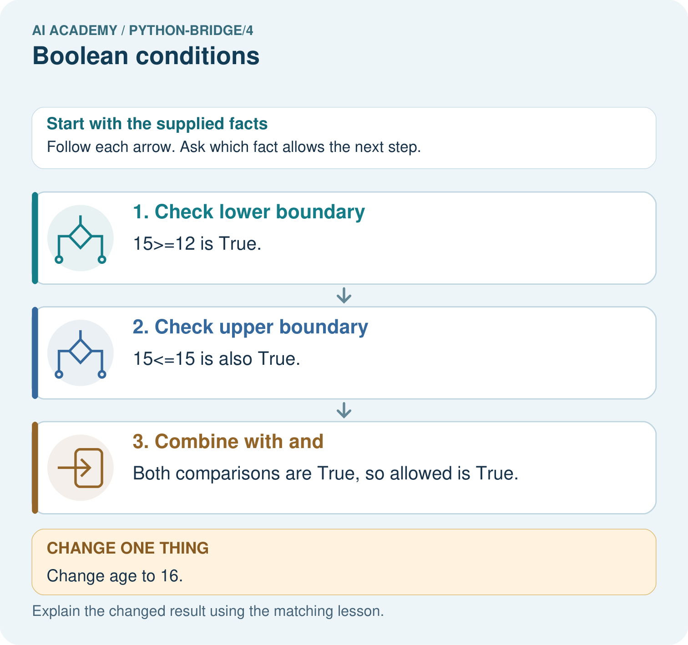
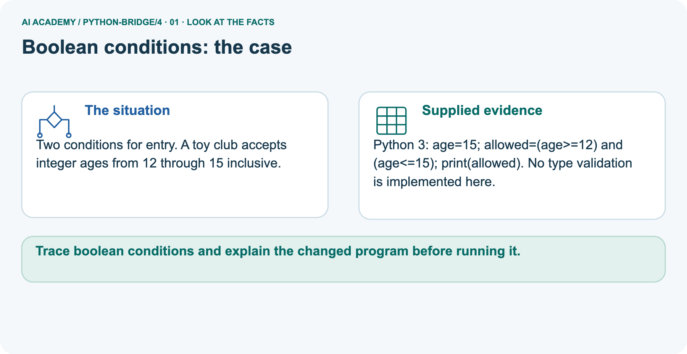
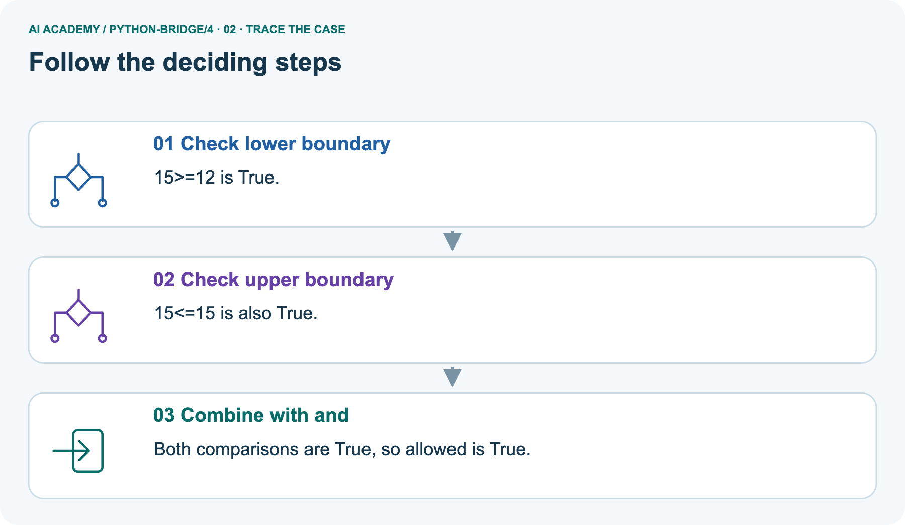
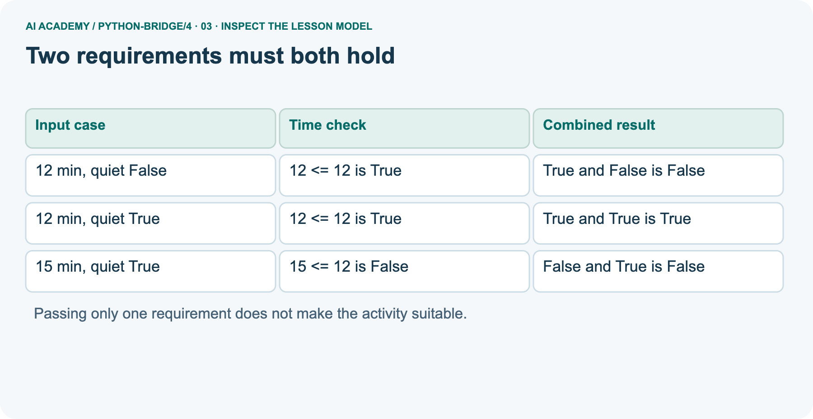
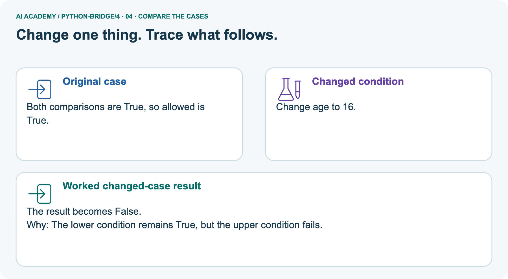
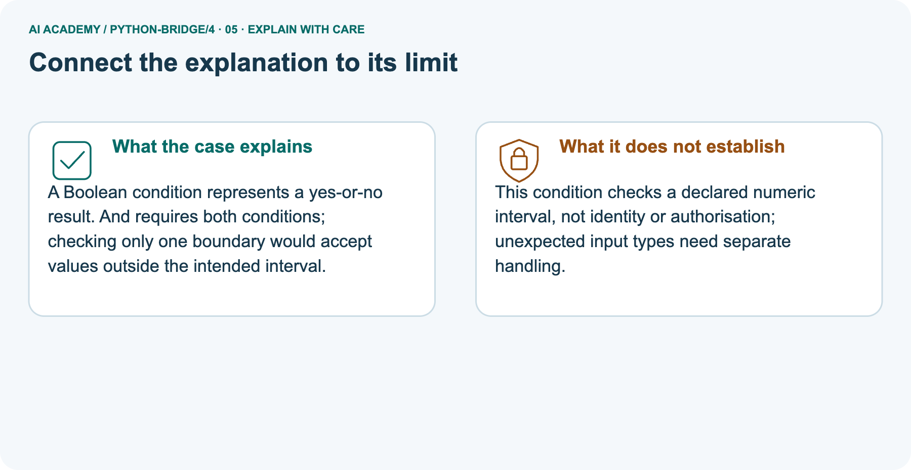
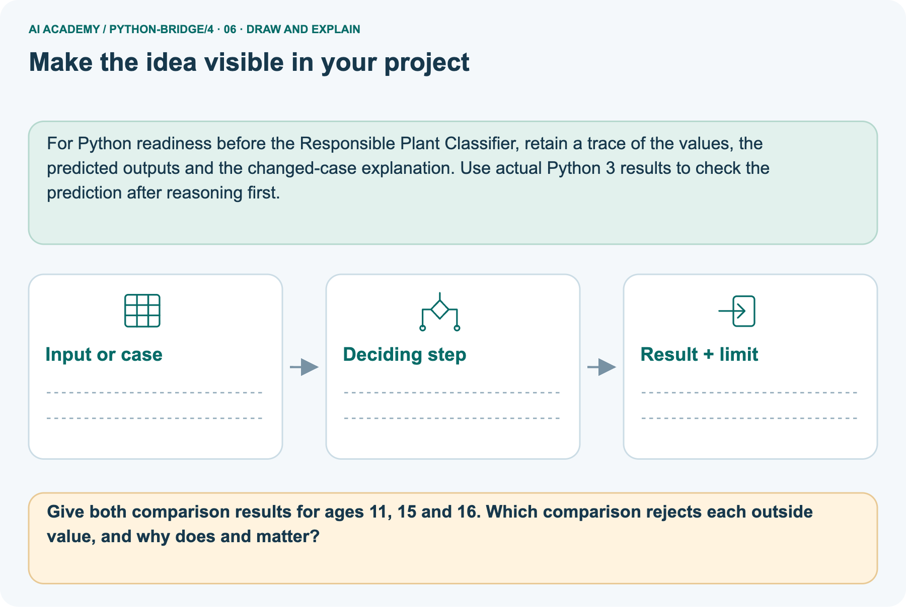

AI Academy · Python readiness bridge · Workbook
Boolean conditions
Learn to understand, design, build, test and explain AI systems responsibly.
Project: Python readiness portfolio
Workbook · 1 of 15
Recall and choose your starting point
Record your starting explanation for Boolean conditions before opening notes. Show any later correction separately.
Try the recall before opening notes. Then use a different colour or a labelled second line to correct your explanation.
Expressions and operator order
Without opening the old lesson, explain one key idea from Expressions and operator order. Give an example and a mistake that the idea helps you avoid.
From a paper algorithm to Python
Without opening the old lesson, explain one key idea from From a paper algorithm to Python. Give an example and a mistake that the idea helps you avoid.
Workbook · 2 of 15
Practise with fading help
Complete the supported Boolean conditions trace and record the first step you can explain without help.
Use W2: Trace separate checks for Boolean conditions. Record the answer once; the lesson and workbook refer to the same attempt.
| Given inputs | Procedure I chose | Middle steps | Result and check |
|---|---|---|---|
Workbook · 3 of 15
Individual reasoning check
Check the proposed Boolean conditions explanation against the supplied facts before discussing it.
Use the worked case for Boolean conditions. Proposed explanation: “At most excludes the boundary”. Decide whether this explanation is supported. Point to the step or supplied fact that decides; explain your repair if needed.
Workbook · 4 of 15
Independent transfer case
Write one first attempt at the reserved independent case before feedback. Repeated copies of that case refer to the same recorded attempt.
Independent case: Combine requirements without replacing AND
Predict all four booleans. Eligibility requires science AND at most100 pages AND availability. Repeat with genre="history" and all other values unchanged. Which OR result could wrongly suggest the genre requirement passed?
pages = 90
genre = "science"
available = False
print(genre == "science" and pages <= 100)
print((genre == "science" and pages <= 100) and available)
print(not available)
print(genre == "science" or pages <= 100)
Attempt this case before feedback. Record any help. Earlier examples below are further practice; a case already practised with feedback cannot establish fresh transfer.
Workbook · 5 of 15
W1 Translate the requirement
Translate the requirement. Apply the supplied Boolean conditions facts and keep your reasoning.
Write a condition for an activity taking at most 12 minutes and being quiet. Explain why exactly 12 minutes is included.
Workbook · 6 of 15
W2 Trace separate checks
Trace separate checks. Apply the supplied Boolean conditions facts and keep your reasoning.
For (minutes, quiet) cases (11, True), (12, False), and (13, True), write the time comparison and final suitability values before running the program.
Workbook · 7 of 15
W3 Distinguish alternatives
Distinguish alternatives. Apply the supplied Boolean conditions facts and keep your reasoning.
Complete all four Boolean combinations for pencil or crayon. Explain the both-available case and the effect of not pencil.
Workbook · 8 of 15
W4 Write a new rule independently
Attempt before feedback. If this repeats the selected independent case, reuse that first attempt; otherwise keep a separate record. Write a new rule independently. Apply the supplied Boolean conditions facts and keep your reasoning.
A fictional puzzle qualifies when its duration is at least 5 and at most 9 minutes and its available flag is True. Write the condition. Predict results for (5, True), (9, True), (10, True), and (7, False).
Choose a case that detects replacing and with or between the range check and available.
Workbook · 9 of 15
W5 Separate a check from a guarantee
Separate a check from a guarantee. Apply the supplied Boolean conditions facts and keep your reasoning.
Explain why a True suitability result does not prove that the supplied duration is accurate or that a child has permission to start the activity.
Workbook · 10 of 15
Project checkpoint and reflection
Connect Boolean conditions to Python readiness portfolio, identify a limit and choose the next useful test.
Add a labelled boolean conditions evidence sheet to Python readiness portfolio. Show how you can translate stated requirements into comparisons.
Use the supplied fictional case and keep its inputs, intermediate steps, calculation or prediction, and limitation. Connect this record to last week’s record; a matching answer without a trace is insufficient.
Workbook · 11 of 15
Feedback, return check and learning record
Record the first repaired step and a different case to revisit after a delay.
| Evidence | My record |
|---|---|
| Worked alone / hint / model | |
| First step I repaired and why | |
| New case checked later; date and result | |
| What I can now explain without notes | |
| One remaining question |
Revisit this idea with your teacher after a delay. Familiarity is different from explaining and using it on a changed case.
Workbook · 12 of 15
Pictorial case practice: Boolean conditions
Two conditions for entry. A toy club accepts integer ages from 12 through 15 inclusive. Explain the labelled step before checking the changed condition.
Two conditions for entry. A toy club accepts integer ages from 12 through 15 inclusive.
Python 3: age=15; allowed=(age>=12) and (age<=15); print(allowed). No type validation is implemented here.

Give both comparison results for ages 11, 15 and 16. Which comparison rejects each outside value, and why does and matter?
Record the help used
Support used: alone / hint / worked example. This record is practice evidence.
Project connection: For Python readiness before the Responsible Plant Classifier, retain a trace of the values, the predicted outputs and the changed-case explanation.
Use actual Python 3 results to check the prediction after reasoning first.
Workbook · 13 of 15
Project portfolio milestone
Keep this week’s input, deciding step, result and limit together in the Python readiness portfolio record.
Project: Python readiness portfolio
Current milestone: Python readiness portfolio. Keep runnable code, predictions, actual outputs, one repaired error and an explanation of a function on changed inputs.
For Python readiness before the Responsible Plant Classifier, retain a trace of the values, the predicted outputs and the changed-case explanation. Use actual Python 3 results to check the prediction after reasoning first.
| Evidence to keep | My record |
|---|---|
| This week’s input and deciding step | |
| Prediction and actual result (or labelled paper trace) | |
| One change since the previous checkpoint and why | |
| One error or limit and the next test |
Workbook · 14 of 15
Supported practice and learning evidence
Try the supported questions before comparing with hints and feedback. Record what you repaired and the evidence you retained.
Use this supported practice once, in the browser or on paper. Keep the reserved independent assessment for a separate first attempt before teacher feedback.
Two conditions for entry. A toy club accepts integer ages from 12 through 15 inclusive.
Practice 1: explain the deciding evidence
Which labelled step matches this detail? Both comparisons are True, so allowed is True.
1. Check lower boundary
2. Check upper boundary
3. Combine with and
Hint · try first
Hint if needed: Read the steps in the pictorial case. Match the supplied detail to the stage that performs or records it.
Feedback · compare after trying
After your attempt, compare with the supported explanation: Combine with and Both comparisons are True, so allowed is True. A Boolean condition represents a yes-or-no result.
And requires both conditions; checking only one boundary would accept values outside the intended interval.
Practice 2: explain the deciding evidence
Changed case · predict first
Changed-case practice: Change age to 16. Which conclusion is supported by the supplied facts?
1. This one example guarantees correct results for every future input.
2. We can decide the result without examining the changed input or the procedure.
3. The result becomes False.
Hint · try first
Hint if needed: Use the changed condition and the deciding step in the pictorial trace. The answer must say what follows from those facts.
Feedback · compare after trying
After your attempt, compare with the supported explanation: The result becomes False. The lower condition remains True, but the upper condition fails.
Repair a missing building block
Review Expressions and operator order (python-bridge/3). Goal: Evaluate numeric expressions using Python’s grouping rules. Short practice: Trace the operation order in both expressions.
Identify which picture step changes with parentheses and predict both results when the multiplier becomes four.. Return to this week and explain what you changed.
Review From a paper algorithm to Python (python-bridge/1). Goal: Translate a short paper calculation into a Python script. Short practice: Match each paper quantity to its Python name.
Why does the spare count get added once, and what prints when spare is five?. Return to this week and explain what you changed.
Predict, run and debug
The browser lab lets you edit the supported Python examples already included in this lesson. Predict first, run, inspect the actual output or error, change one input, then run again.
Keep code, predictions, actual results and a reasoned revision together. On paper, label your result as a trace rather than an execution.
Keep your completed work
Use Download completed work in the hosted lesson to export your answers, reflections, practice feedback and code-run evidence. Open the HTML copy to read or print it.
Drafts stay in this browser when storage is available; clear drafts on a shared device.
Workbook · 15 of 15
Visual concept journey
Explain each Boolean conditions picture from its labels, then record a relevant limit.
01. Boolean conditions: the case

Two conditions for entry. A toy club accepts integer ages from 12 through 15 inclusive. Supplied facts: Python 3: age=15; allowed=(age>=12) and (age<=15); print(allowed). No type validation is implemented here.
Point to the given fact that matters most. Explain why it matters.
02. Follow the deciding steps

Check lower boundary: 15>=12 is True. → Check upper boundary: 15<=15 is also True. → Combine with and: Both comparisons are True, so allowed is True.
Point to each numbered stage and explain which recorded input it uses.
03. Two requirements must both hold

Two requirements must both hold. 12 min, quiet False | 12 <= 12 is True | True and False is False. 12 min, quiet True | 12 <= 12 is True | True and True is True. 15 min, quiet True | 15 <= 12 is False | False and True is False
Read the labels and values. Explain the relationship the model shows.
04. Change one thing. Trace what follows.

Original case: Both comparisons are True, so allowed is True. Changed condition: Change age to 16. Expected result: The result becomes False. Reason: The lower condition remains True, but the upper condition fails.
Predict before checking the worked changed-case result. Name what changed and what the supplied facts allow you to conclude.
05. Connect the explanation to its limit

A Boolean condition represents a yes-or-no result. And requires both conditions; checking only one boundary would accept values outside the intended interval.
Limit: This condition checks a declared numeric interval, not identity or authorisation; unexpected input types need separate handling.
Explain the case, then point to a limit on the claim.
06. Make the idea visible in your project

For Python readiness before the Responsible Plant Classifier, retain a trace of the values, the predicted outputs and the changed-case explanation. Use actual Python 3 results to check the prediction after reasoning first.
Draw your input, deciding step, result and limit. Supported question: Give both comparison results for ages 11, 15 and 16. Which comparison rejects each outside value, and why does and matter?
Draw your project trace and justify the deciding step using evidence.